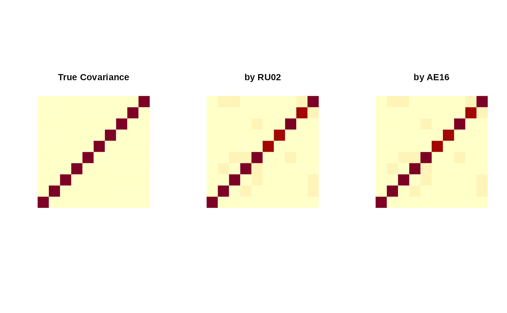

Given \(N\) observations \(X_1, X_2, \ldots, X_N\) in SPD manifold, compute the \(L_2\)-Wasserstein barycenter that minimizes $$\sum_{n=1}^N \lambda_i \mathcal{W}_2 (N(X), N(X_i))^2$$ where \(N(X)\) denotes the zero-mean Gaussian measure with covariance \(X\).
Usage
spd.wassbary(spdobj, weight = NULL, method = c("RU02", "AE16"), ...)Arguments
- spdobj
a S3
"riemdata"class of SPD-valued data of \((p\times p)\) matrices.- weight
weight of observations; if
NULLit assumes equal weights, or a nonnegative length-\(N\) vector that sums to 1 should be given.- method
name of the algortihm to be used; one of the
"RU02","AE16".- ...
extra parameters including
- maxiter
maximum number of iterations to be run (default:20).
- abstol
tolerance level for stopping criterion (default: 1e-8).
Examples
# \donttest{
#-------------------------------------------------------------------
# Covariances from standard multivariate Gaussians.
#-------------------------------------------------------------------
## GENERATE DATA
ndata = 20
pdim = 10
mydat = array(0,c(pdim,pdim,ndata))
for (i in 1:ndata){
mydat[,,i] = stats::cov(matrix(rnorm(100*pdim), ncol=pdim))
}
myriem = wrap.spd(mydat)
## COMPUTE BY DIFFERENT ALGORITHMS
baryRU <- spd.wassbary(myriem, method="RU02")
baryAE <- spd.wassbary(myriem, method="AE16")
## VISUALIZE
opar <- par(no.readonly=TRUE)
par(mfrow=c(1,3), pty="s")
image(diag(pdim), axes=FALSE, main="True Covariance")
image(baryRU, axes=FALSE, main="by RU02")
image(baryAE, axes=FALSE, main="by AE16")

par(opar)
# }